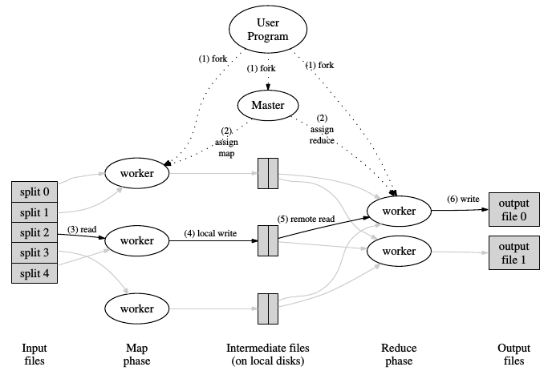
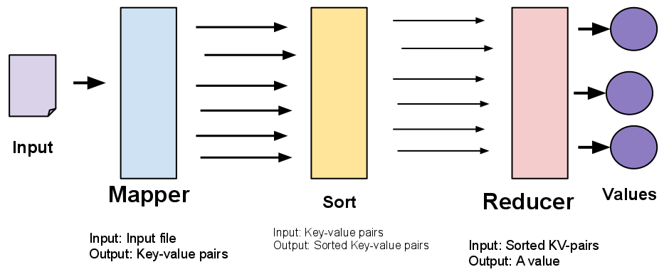
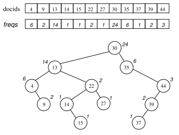
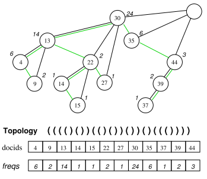
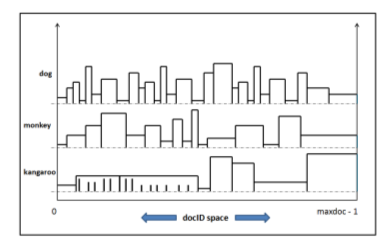

Big Data y Construcción de Indices para motores de búsqueda
Trabajo Final en Curso
Licenciatura en Sistemas de Información
@tdelvechio - Tomas Delvechio
UNLu (2015)
Agenda
- Big Data
- Recuperación de Información
- Indices Invertidos
- Construcción Distribuida de Indices
- Hadoop
- Nuestro trabajo
- Indices basados en Treaps
- Block-Max Indexes
- Objetivos finales
Big data
¿Grandes datos? No! Datos Masivos
Big Data hace referencia a diversos enfoques, procesos, herramientas y técnicas que tienen por objetivo el tratamiento de volúmenes de información que no es viable procesar en un único dispositivo.
Ejemplos
Google y la Gripe H1N1 (2009)
Predicción de evolución de precios en asientos de aviones
Netflix y la producción de contenido
Si tenemos algoritmos y poder de procesamiento para manejar toda la información disponible, no es necesario generar modelos que expliquen la realidad, sino explicar y predecir la realidad en base a los hechos recopilados históricamente
Big Data - Desafío
Extraer valor de las bases de datos masivas
(Propias y publicas)
Las 4 V de Big Data (IBM)
- Volumen - Cantidad de datos generados
- Variedad - Fuentes de datos
- Veracidad - Confiabilidad de los datos
- Velocidad - Convertir los datos en información rápidamente
Sectores interesados en Big Data
- Salud
- Meteorólogos
- Redes Sociales (Publicidad)
- Investigaciones
- IoT
- Cualquiera que disponga de
grandes volúmenes de información
(Internet).
Recuperación de
Información
Baeza-Yates, R. y Ribeiro-Neto, B. "Modern Information Retrieval". ACM Press. Addison Wesley. 1999.La Recuperación de Información trata con la representación, el almacenamiento, la organización y el acceso a ítems de información
Salton, G. Y Mc Gill, M.J. "Introduction to Modern Information Retrieval". New York. Mc Graw-Hill Computer Series. 1983.Es un campo relacionado con la estructura, análisis, organización, almacenamiento, búsqueda y recuperación de información
Recuperación de la Información
Disciplina de varias décadas de desarrollo
Evolución: Especialización->Generalización->Especialización
Áreas relacionadas (ejemplos)
- Estructuras de datos
- Métodos de indexación
- Sistemas Distribuidos
- Algoritmos de compresión
- Algoritmos de ranking
- Optimización en búsquedas
- Data Profiling
Fases de la recuperación
IR Clasico
- Construcción de indices
- Resolución de consultas de usuario
IR en la Web
- Creación de la colección de documentos (Crawling)
- Construcción de indices
- Resolución de consultas de usuario
Ejemplos de Motores de Búsqueda - Google
Ejemplos de Motores de Búsqueda - Yahoo
Ejemplos de Motores de Búsqueda - Youtube
Ejemplos de Motores de Búsqueda - Mercado Libre
Arquitectura básica de un SRI
Tolosa, G. y Bordignon, F. "Introducción a la Recuperación de Información". Consultar.Indexación de Documentos
Área: Recuperación de Información. Base de datos no estructuradas
Ámbito: Motores de Búsqueda (Google, Yahoo!, Bing)
Objetivo: Mejorar la recuperación de documentos
Escala: Internet (Toda la Web) - Pequeña escala
Indice Invertido
Es una estructura que "mapea" términos a los documentos que los contienen.
Estructura clásica para recuperación (Existen otras propuestas)
Invierte la forma de acceso a los datos (Respecto de la colección)
Operaciones involucradas
- Construcción
- Actualización
- Uso (Búsqueda)
Estructura de un Indice Invertido
2 partes:
- Vocabulario (Conjunto de términos de la colección)
- Archivo Invertido: Conjunto de Listas de aparición o posting list
Estructura de un Indice Invertido
Construcción de un II

Construcción de un II
Operaciones a realizar en la construcción de un índice
- Tokenización
- Stemming
- Eliminación de Stopwords
- Eliminación de términos con frecuencias bajas
- Construcción de postings lists
- Ordenamiento de postings lists
- Compresión
Construcción
Distribuida de II
Motivaciones
- Analizar varios documentos a la vez
- Crecimiento de las colecciones
- Escalar en recursos
- Procesamiento (CPU y cores)
- Almacenamiento
- RAM
- I/O
- Reducción de tiempo de construcción
- Resolución de consultas distribuida
Construcción
Distribuida de II
PREMISA
Escalar en un único equipo (Aun supercomputadora) en algún momento se volverá imposible, inviable o ineficiente.
Solución
Escalar en un cluster de commodity hardware
Apache Hadoop
¿Que es Hadoop?
The Apache Hadoop software library is a framework that allows for the distributed processing of large data sets across clusters of computers using simple programming models.Apache Hadoop Official Web
Premisas de Hadoop
- Cluster dedicado
- Commodity Hardware (Miles de nodos)
- Las fallas de HW son regla, no excepción
- Aplicaciones trivialmente paralelizables
- Procesamiento Batch, no online (en principio)
- Procesamiento en escala de Tera o Petabytes
- Mover datos es caro
- Mover computo es barato
- Escalabilidad
Tecnologías
- Lenguaje: JAVA
- Comunicación: SSH y RPC
- Framework de desarrollo: MapReduce
- Distributed File System: HDFS
Ejemplos de problemas resueltos en Hadoop
- Sort y Grep Distribuido
- Recorrido de grafos
- Análisis de logs
- Indexación Distribuida
Arquitectura de Hadoop
Dos servicios que operan de forma independiente, en arquitectura master/slave
YARN / MapReduce
Framework y scheduler de procesos
HDFS
Sistema de Archivos Distribuido
HDFS: Hadoop Distributed File System
- Abstrae el cluster: ofrece una visión global de Sistema de archivos.
- Soporta nativamente tolerancia a fallas y disponibilidad
- Supone Commodity Hardware
- Operaciones básicas de gestión de Archivos y Directorios
- Seguridad es posible
Arquitectura de HDFS
 Fuente: HDFS Architecture. Official Hadoop Documentation.
Fuente: HDFS Architecture. Official Hadoop Documentation.
YARN: MapReduce
- Entorno para distribuir procesamiento de forma masiva
- Ofrece un modelo de programación (MapReduce)
- Funciones de procesamiento provistas por el usuario
- Mappers y Reducers
- El computo hacia los datos, no al revés
- Usa los bloques del DFS, e intenta que sea un Map por Bloque
- Por defecto es Java, aunque es posible usar otros lenguajes
- Es independiente de HDFS
- YARN se dedica a la gestión de los recursos del cluster MapReduce es el Framework de procesamiento de datos
Como trabaja MapReduce
Dean, J. Et. all. "MapReduce: Simplified Data Processing on Large Clusters". OSDI. 2004. Enlace.
MapReduce: Registros Clave-Valor
http://www-inst.eecs.berkeley.edu/~cs61a/sp12/labs/lab14/mapreduce_diag.png
Ejemplo de aplicación: WordCount

http://devveri.com/wp-content/uploads/2012/07/mapreduce.png
Trabajo Final de Licenciatura en Sistemas
Análisis comparativo de rendimiento en estructuras de datos de Índices Invertidos
Premisas
- El volumen de la información crece de forma acelerada
- No se puede ofrecer resultados mas rápidos a costa de la calidad
- Sin embargo, la velocidad es un requisito cada vez mas presente
Objetivos
Implementar y medir la velocidad de construcción de un Indice Invertido basado en 2 estructuras avanzadas de Indice, resignando tamaño a costa de obtener resultados de forma mas eficiente en la etapa de resolución de consultas.
Implementación distribuida de los algoritmos en Hadoop
Evaluar y comparar la performance de los algoritmos
Baseline: Indexador "clásico"
Limites
- No se intenta medir ni evaluar la resolución de consultas
- No se pretende crear una metodología de desarrollo para herramientas de IR en Hadoop
- No se desea evaluar diferentes tipos de indices, todos los algoritmos deberán construir indices con la misma "semántica"
Estructuras
Se compararan 2 estructuras, ademas del baseline
- Baseline: Indice "Clasico"
- Indice con postings con estructura Treap
- Indice con postings con Block-Max Index
II basado en Treaps
Autores: Konow, Navarro, Clarke y López-Ortíz en 2013
 R. Konow, G. Navarro, C. L. A. Clarke, and A. López-Ortíz, "Faster and Smaller Inverted Indices with Treaps" SIGIR ’13 Proc. 36th Int. ACM SIGIR Conf. Res. Dev. Inf. Retr., vol. 1, pp. 193–202, 2013.Treaps: Propiedades
Treap: Estructura de datos que combina Arboles y Heaps
- Invariante de Clave: Arbol Binario con organización Inorder
- Invariante de Prioridad: Heap Binario con prioridad descendente
- Con ciertos algoritmos puede ser construido con complejidad lineal
Treaps: Estructura
La posting list de un II basado en Treaps tiene algunas modificaciones se necesitan representar 3 cosas:
- Clave: Document ID
- Prioridad: Frecuencia
- Topología del Treap
Para la Topología, se usara un isomorfismo que simplifica la construcción del Árbol
Treaps: Construcción de una Posting List
Treaps: Conclusiones
- Estructura combinada de Árbol Binario y Heap
- Mejora en resolución de consultas
- Habilita compresión de DocId y Frecuencia
- Necesita agregar la topología como información en la posting
Indices Block-Max
Presentado por Ding y Suel en 2011
Proponen la extensión de un enfoque ampliamente conocido (WAND), mediante la adición de una estructura de datos adicional
Divide la posting list en bloques, y agrega una capa de información.
Block-Max: Estructura
- Posting list estándar, ordenada por Doc Id
- La posting se divide en bloques de menor tamaño, que son unidades de compresión y consulta
- Se agrega un indice adicional, con un registro por bloque
- Id de Bloque
- Tamaño del bloque
- Score Máximo del bloque
Block-Max: Representación
El algoritmo visualizaria las postings lists de la siguiente manera
 S. Ding and T. Suel, "Faster top-k document retrieval using block-max indexes" Proc. 34th Int. ACM SIGIR Conf. Res. Dev. Inf. - SIGIR ’11, p. 993, 2011Block-Max: Pros y contras
Ventajas
- Permite descartar bloques enteros en base al score
- Ofrece la posibilidad de hacer skip entre bloques, optimizando el recorrido
- Mantiene ventajas de propuestas anteriores mejorando los resultados
Desventaja
La estructura que agrega hace que el indice final sea de mayor tamaño
¿Que esperamos encontrar con el presente trabajo?
- Determinar que factores influyen en la construcción de un II
- Explorar los limites del procesamiento en Hadoop
- Según recursos disponibles
- Según la información a Indexar
- En base a los algoritmos proporcionados
- Cantidad de trabajos ejecutándose de forma concurrente
- Establecer una base de comparación para futuros trabajos de construcción de indices distribuidos con otras herramientas y enfoques
- Mesurar y comparar técnicas de compresión de datos aplicadas en el procesamiento y almacenamiento